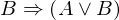

Show the Proof¶
In [1]:
import proveit
# Automation is not needed when only showing a stored proof:
proveit.defaults.automation = False # This will speed things up.
proveit.defaults.inline_pngs = False # Makes files smaller.
%show_proof
Out[1]:
| step type | requirements | statement | ||
|---|---|---|---|---|
| 0 | instantiation | 1, 2, 3, 4 |  ⊢ ⊢  | |
 : :  , : , :  | ||||
| 1 | theorem | ⊢  | ||
| proveit.logic.booleans.implication.modus_tollens_denial | ||||
| 2 | reference | 8 | ⊢  | |
| 3 | deduction | 5 | ⊢  | |
| 4 | reference | 17 | ⊢ | |
| 5 | instantiation | 6, 7, 8, 9 | , ⊢ | |
| : , : | ||||
| 6 | theorem | ⊢  | ||
| proveit.logic.booleans.disjunction.or_if_right | ||||
| 7 | instantiation | 10, 12 | ⊢  | |
| : , : | ||||
| 8 | instantiation | 11, 12 | ⊢ | |
| : , : | ||||
| 9 | assumption | ⊢ | ||
| 10 | axiom | ⊢  | ||
| proveit.logic.booleans.disjunction.left_in_bool | ||||
| 11 | axiom | ⊢  | ||
| proveit.logic.booleans.disjunction.right_in_bool | ||||
| 12 | instantiation | 13, 14 | ⊢  | |
| : | ||||
| 13 | axiom | ⊢  | ||
| proveit.logic.booleans.negation.operand_is_bool | ||||
| 14 | instantiation | 15, 16, 17 | ⊢ | |
 : , : ,  : : | ||||
| 15 | theorem | ⊢  | ||
| proveit.logic.equality.substitute_truth | ||||
| 16 | theorem | ⊢  | ||
| proveit.logic.booleans.true_is_bool | ||||
| 17 | assumption | ⊢ | ||